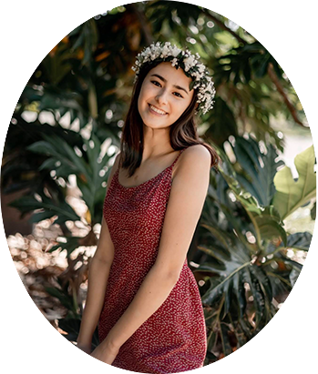

Hi I'm Ashley Broderick
Welcome to my digital resume and portfolio

I'm a Hawaii-born media enthusiast with a passion for writing and design. Currently enrolled as a Junior at Syracuse University majoring in Public Relations and IT Management, I pride myself on my knowledge of media trends as well as traditional communication tactics. My endeavors at school in and outside the classroom continue to build my foundation for the professional world of public relations and web-design. The work I've produced from my extracurriculars, and academics are demonstrated here in my portfolio.